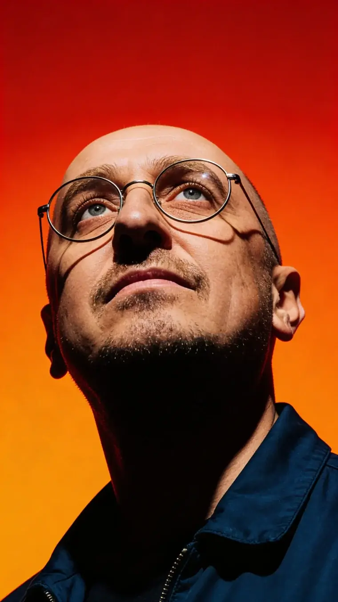
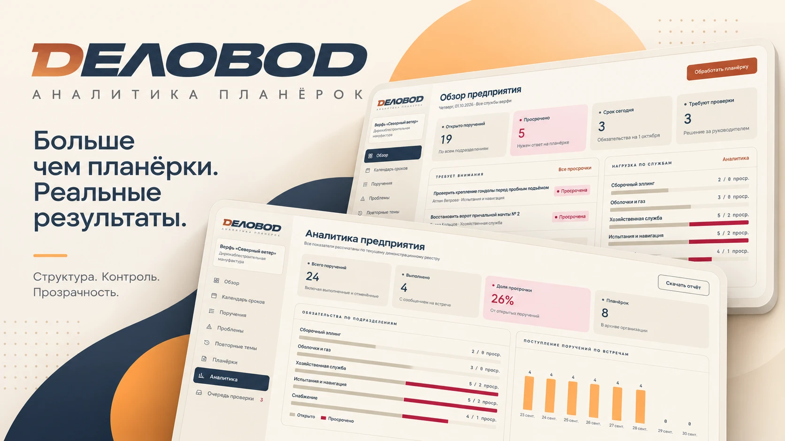
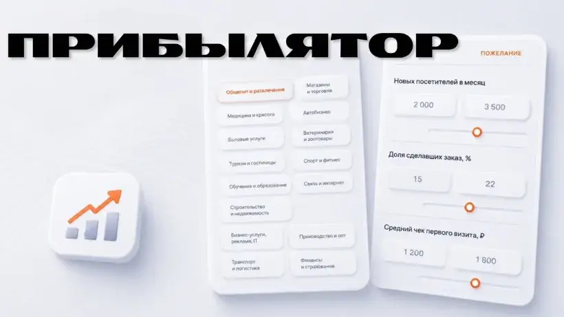
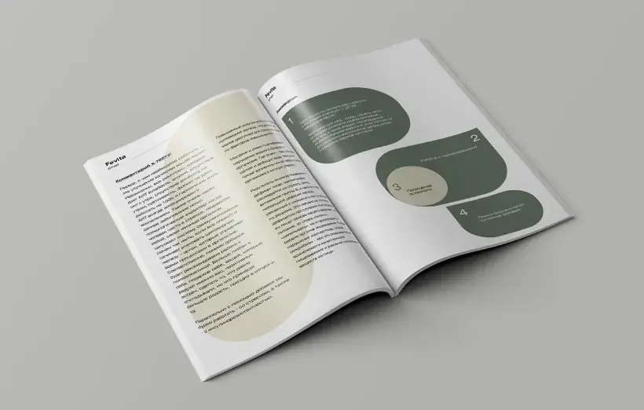
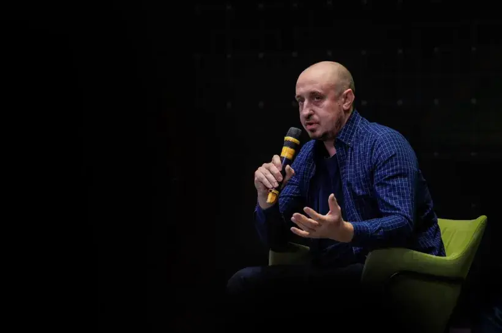
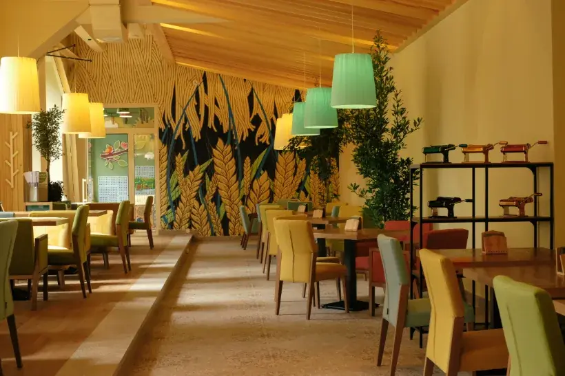
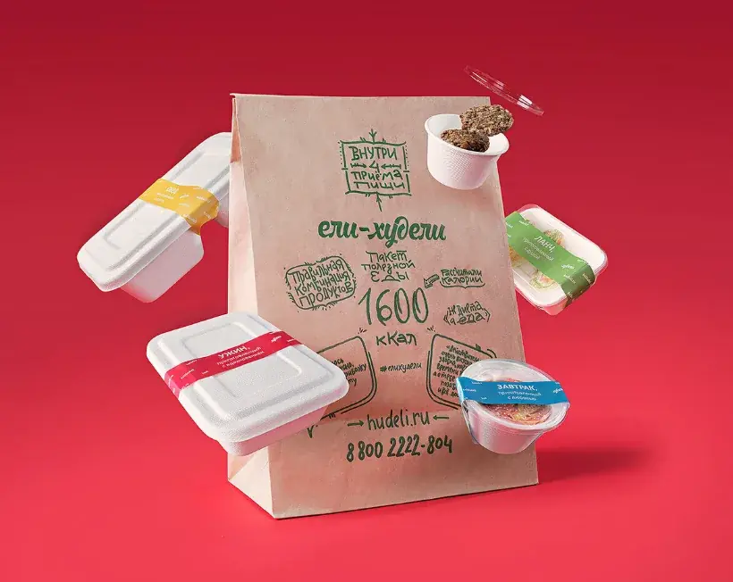
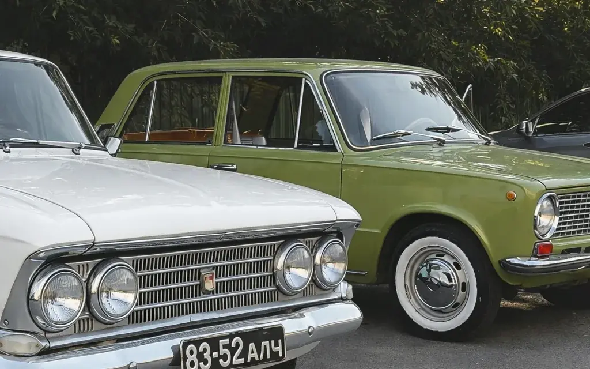

Вычисляем самую дорогую рутину в вашем бизнесеи отдаём её ИИ
Внедряю AI глазами собственника, а не рядового разработчика

Проекты, которые
собирал руками
Каждый — от идеи до работающей системы. Не консультации со стороны, а личная ответственность за результат.

Система записи и анализа планёрок
Транскрибация записи ежедневных планёрок на крупном производстве, составление сжатого саммари для руководства и собственника, система оценки и распределения задач на основе массива данных планёрок.
Прогнозирование поставок в сеть
Автоматическая система аналитики данных и составления прогноза поставок продуктов питания в крупную продуктовую сеть — сотни торговых точек.

Прибылятор
Каталог калькуляторов для собственников и руководителей бизнесов. 15 направлений, моментальный прогноз потенциальной прибыли.
Сказ на заказ
AI-проект персональных книг по фото героя. Продуктовая логика, автоматизированный механизм генерации, бизнес-модель и процесс выпуска.

Fevita
Онлайн-чекап женского здоровья. Технологическая архитектура платформы, продуктовая логика сервиса и внедрение AI в клинический процесс.

Маркетинг двух интеллектов
Агентство по построению виртуальных Академий бренда и созданию виртуальных сотрудников. Системы обучения, передачи стандартов и AI-автоматизации.

Место пасты
Ресторан свежей домашней пасты в Барнауле. Запуск с нуля: концепция, локация, ремонт, команда, обучение, меню, маркетинг и финансовая модель.

Ели-худели
Доставка полезного питания. Бренд, продукт, маркетинговые процессы, франшизная сеть и уникальные терминалы выдачи готового питания.
Дачные истории (RIP)
Ресторан с уникальной концепцией. Разработка идентичности и атмосферы заведения, подбор и формирование команды, запуск операционной модели.
каталог калькуляторов для 15 направлений бизнеса
Смотрю на бизнес
глазами собственника
Я сам открывал рестораны, службы доставки, собирал команды с нуля, проектировал и жил в рутине.
Приходит с технологией и ищет, куда её применить. Внедряет то, что умеет. Отчитывается количеством настроенных сценариев.
Прихожу с вопросом -- где вы, вероятно, теряете деньги. Считаю стоимость рутины в часах и рублях. Инструмент выбираю последним — под конкретную задачу, а не наоборот.
Вы не получаете красивую систему, которой никто не пользуется. Вы получаете процесс, который стал дешевле, быстрее или перестал зависеть от одного человека.
Маркетолог
своих бизнесов
Я не продавал маркетинг со стороны — я делал его для проектов, за которые платил сам. Это разный уровень ответственности за результат.
проектов выполнено
Брендинг, дизайн, упаковка смыслов, рекламные кампании, запуски и перезапуски — от вывески до франшизной сети.
брендов
Рестораны, доставка, ритейл, производство, услуги, городские и общественные проекты. Разные рынки — одна логика работы.
лет в бизнесе
Собственные проекты с 2012 года, до этого — дизайн и реклама. Прошёл все роли: исполнитель, руководитель, собственник.
Четыре шага
без сюрпризов
Диагностика
Разбираю процессы, говорю с командой, считаю стоимость рутины. Выхожу с картой и приоритетами.
2 неделиВыбираем точку
Берём один процесс, где эффект быстрый и измеримый. Договариваемся, что считаем результатом.
3–5 днейПилот
Собираю и запускаю решение на реальных задачах. Команда работает с ним, я дорабатываю по обратной связи.
3–4 неделиМасштабирование
Переносим на остальные процессы, обучаем команду, передаю систему вам. Дальше она работает без меня.
по плануО чём спрашивают
перед началом
Немного не про бизнес

Многодетный отец
Семья — главный проект, в котором нет дедлайнов, зато есть по-настоящему долгосрочные цели.
Сибирская и русская кухня
Изучаю региональные традиции, историю рецептур и кулинарную культуру Сибири и России.
Коллекционирование
Современное искусство, русский рекламный плакат, старинная упаковка, советские автомобили.